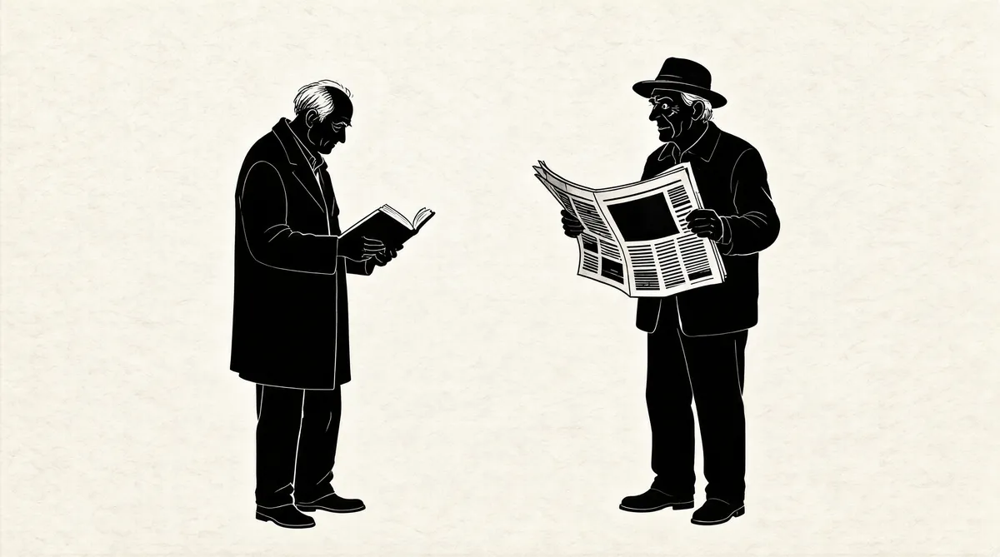

第3章 习惯性动物

在太阳谷，人们并未见到巴菲特的搭档查理·芒格的踪影。艾伦公司的组织者从未邀请过他。这对芒格来说是件好事，因为太阳谷年会是那种几乎求他他也不愿参加的活动。太阳谷的礼仪需要你去取悦太多的人。1巴菲特就很喜欢做令他人愉快的事。即便是他对听众们大肆嘲讽，他也要确信自己保持着让人喜欢的个人魅力。但是，芒格只需要得到尊重，他可不在乎别人对他的好恶。
不过，在很多人眼里，这两个人几乎是可以互换的。巴菲特自己就称他和芒格“简直就是连体婴”。他们走路时都斜向同一方向，步态同样笨拙，同一款灰西装僵硬地挂在同样呆板的身上——因为他们把好几十年的时间都用来看书、读报，而不是运动或在户外活动，连他们那灰白色头发的梳理方式都一模一样；他们戴款式相似的克拉克·肯特式的眼镜，透射出一样慑人的目光。
他们以相同的方式思考，对投资着迷，将之视为愿意倾其一生去解答的谜。这两人都把理性和诚实看作最高的美德。冲动和自以为是，在他们看来是造成错误的主因。他们喜欢探究失败的原因，以之作为发现成功定律的途径。芒格说：“我一直在以伟大代数学家卡尔·雅各比所建议的热情，寻找逆向洞察力。逆向，一直逆向。”他用了一个聪明农夫的故事来说明这一点，这个农夫说：“告诉我，我将死于何处，这样，我就不去那儿。”2芒格用比喻，而巴菲特则采用平实的方式来解读。巴菲特没有芒格那样微妙的宿命论感，尤其是谈及自己的生死时。
不过，两个人都有布道的冲动。芒格诲人不倦，他曾经发表过几次关于“成功生活之艺术”的演讲，因为见解深刻而深深打动了听众，他的演讲录像被竞相传看，直到互联网让所有人都能获取到。芒格逐渐对发表这些演讲热情澎湃，有时候他甚至变得“自我陶醉”（这是巴菲特的形容），不得不被人从讲台上给拖下来。私下里，芒格往往对着自己或朋友演讲，和他说话就像坐在一辆由脱缰的野马拉的马车上。
虽然芒格自视为业余的科学家、建筑师，会毫不含糊地解释爱因斯坦、达尔文的理论，谈论理性思考的习惯，分析圣巴巴拉地区房子之间的完美间距，但是，当冒险涉及那些离自己所学甚远的领域时，他总是非常谨慎。他害怕自己成为“鞋扣情结”的受害者——这是他在哈佛法学院的同学的说法。
“我同学的父亲每天都和同一群人共事。”芒格说，“他们中有一个人计划在鞋扣市场囤积居奇——这个市场真的很小，但是这人最终占据了整个市场。然后，他对所有东西都高谈阔论，所有能想象的东西——垄断鞋扣市场令他成为各个方面的全能专家。沃伦和我一直认为，这种行为方式大错特错。”3
巴菲特不存在受“鞋扣情结”折磨的危险。他担心自己看起来面目可憎，或者更糟糕的是，显得伪善。他相信自己所谓的“能力范围”，在自己周围画个圈，待在里面，做好三件事：钱、投资和自己的生活——他可以因此被视为一名绝对意义上的专家。
不过，和芒格一样，巴菲特有自己的自我陶醉方式。芒格会有选择地演讲，但是却停不下来；巴菲特则通常是结束一个演讲之后，发现很难不开始另一个演讲。
巴菲特作演讲，写文章，写评论；搞聚会，给别人上小课；为诉讼案做证；上电视纪录片，接受电视采访，让新闻记者跟着他旅行；去大学开课，邀请大学生来看望他；当家具店开张、保险电话营销中心落成的时候，或者在和奈特捷公司潜在客户的晚餐会上给人们上一课；在更衣室对着橄榄球运动员演讲；和议员们吃午餐时也说上一番；在编辑委员会上教育新闻界的人们；给自己的董事会成员上课；最重要的是，在写给股东的信以及召开股东会时，他也会穿上“教师制服”。伯克希尔–哈撒韦就是巴菲特的“西斯廷教堂”——不只是一件艺术品，而且还是展示其信仰和理念的“讲义”，这就是为什么芒格会把公司称为巴菲特的“传教公司”。
自从1959年通过朋友在午餐时认识后，这两人一直是彼此最忠实的听众。在把午餐东道主说得晕头转向之后，他们撇下这位共同的朋友，开始叽叽喳喳说起来。从那以后，他们之间的交谈持续了几十年，从未中断。到了最后，他俩能读懂对方脑子里的东西，无须说话，靠心灵感应就可以。但是，那个时候，他们的其他听众已经扩大到了他们的朋友、商业伙伴、股东——实际上是全世界。人们离开巴菲特的办公室或者芒格的演讲会之后，都会夸张地用手拍额头，嘴里叫着“我的天哪！”。这两人讲完那些似乎难以解决的问题后令人豁然开朗，无论他们讲过多少次，对他们演讲的需求只增不减。就像他们生活中的大部分事一样，他们发现演讲人这个角色很好扮演，而且令他们感到自在舒适，早已通过长期的习惯铭刻在他们的禀性之中。
不过，当巴菲特被说成是一个“习惯性动物”的时候，他带着一种受伤的表情回应说：“我不是，查理才是一个习惯性动物。”
芒格早上起床，然后把0.25英寸厚白内障术后用的老式眼镜架上鼻梁。他每天在同一时刻准点坐进汽车，小心翼翼地把他父亲的公文包——他正使用的公文包——放到旁边的座位上，然后开车从帕萨迪纳去洛杉矶中心区。4他会数在反光镜里看到的车辆，看着车辆从前方开过，当感觉有空间的时候，切进左边的行车道。5（有好几年，芒格开车时会在后备箱放上一罐汽油，以防自己忘记停车加油，不过，最终他被劝说放弃了这一特别的习惯。）一到市区，芒格经常会和某个人在沙砖建筑装饰风格的加州俱乐部一起吃早餐，这是该市古老的建筑之一。到了俱乐部，芒格会先从三楼电梯旁的桌案上拿一捆报纸，然后大步走到餐厅的第一张桌子那里。芒格就像拆圣诞节礼物包一样打开报纸，最后，报纸会成堆摆放在他周围。
“早上好，芒格先生。”洛杉矶商业机构的人员经过芒格身边，走向其他桌子（位置不那么好）的时候会很尊敬地向他问好。如果芒格能认出他们，并和他们聊上一会儿，他们会非常高兴。
芒格用他的右眼注视这些人——因为一次白内障手术失败，他失去了左眼。6现在，他说话的时候，左眼皮会半耷下来。他左右转动脑袋，用右眼扫视室内，将周围情况尽收眼底。只有一侧眼球转动，让他永远都是一副警惕和骄傲的样子。
吃完蓝莓之后，芒格走向那间不大不小、乱糟糟的办公室。他从芒格–托尔斯–奥尔森律师事务所租了这间办公室，这家律师事务所是他与友人合伙在1962年成立的，三年前他刚刚从事务所退休。芒格的办公室隐藏在富国银行中心上面的楼层里，这间办公室由他多年的秘书图托尼克·多萝茜·奥伯特照看着。办公室里到处都是科学和历史方面的书籍，还有本杰明·富兰克林的自传、塞缪尔·约翰逊的一幅巨幅画像、芒格最新的房地产业务计划和模型，窗户旁边放着富兰克林的半身像，芒格在这里就像在家一样。因为信奉新教徒的中产阶级价值观，而且非常喜欢其生活方式，所以，芒格很崇拜富兰克林。他经常引用富兰克林的话，而且还研究富兰克林以及被富兰克林称为“杰出先辈们”的著作，比如西塞罗和迈蒙尼德的书。芒格还同时管理着伯克希尔旗下的韦斯科金融公司，以及这家金融公司所有的一家法律出版公司——《每日新闻》公司。另外，他还四处忙于房地产业务。想和芒格说话的人——家人、挚友和商业伙伴除外——都由多萝茜不动声色地巧妙拦下。
芒格把大把时间用于4项慈善事业。当他做出选择，他就会全力投入。不过，对被他称为“朽木”的人，他没有什么“好心”，他的慈善都是达尔文式的，以激励最优秀的人。古德·撒马利亚医院、哈佛西湖学校、亨廷顿图书馆、斯坦福法学院都是受益机构。这些机构明白，芒格的资金和付出将伴随着大量的讲座，以及按“查理风格”办事的原则要求。芒格很高兴资助斯坦福法学院的学生宿舍，只要斯坦福精确设计宿舍的大小——当然要有窗——规定卧室到厨房的距离，同时把停车场建在他认定的地方。他带有老式贵族的责任感，从接受者的利益出发，在资金的使用上附加了各种各样让人恼火的限制，而原因就在于他懂得最多。
即使要关注他人的工作行为，芒格每天还是有时间和他的老朋友们在洛杉矶乡村俱乐部玩儿一小会儿高尔夫。有时他会在他亲自设计的帕萨迪纳的房子里和妻子南希共进晚餐；而更常见的是，和一帮亲密老友在加州俱乐部或洛杉矶乡村俱乐部度过。一天即将结束时，他会埋头看书。他一般和他的8个晚辈一起度假（他的子女、继子、孙子、孙女和外孙、外孙女），度假地通常是他在明尼苏达州星岛的别墅。在这个地方，芒格和他父亲一样，是个贪婪的渔夫。芒格在他的大船“ChannelCat”上做东招待很多朋友（他的一个朋友把这艘船称为“漂浮餐厅”，主要供娱乐之用）。总之，尽管芒格有些怪癖，但他是一位率直的爱家好男人，他也爱他的朋友、俱乐部和他的慈善事业。
巴菲特也喜欢他的朋友和俱乐部，但很少做和慈善有关的事。他的生活比芒格还要单一，虽然他的性格比芒格复杂。他绝大多数时间都在奥马哈度过，但是他的日程安排会围绕着一连串的董事会会议和拜访朋友的旅行，这些安排不疾不徐，非常有规律，就像月相的变化一样。如果待在奥马哈，他会从住了40年的房子出发，行车1.5英里，在早上8点半达到基威特广场的办公室——他在这里工作也快40年了。到了之后，他会打开电视机，调到CNBC频道，把声音关掉，然后一边瞄屏幕，一边阅读桌上的一堆出版物：《美国银行家》、《编辑和出版人》、《广播》、《饮料文摘》、《今日家私》、A.M.Best公司的《产险评论》、《纽约客》、《哥伦比亚新闻评论》、《纽约观察家》，以及他喜欢的作者写的股票和债券市场的最新分析。
看完这些东西之后，他又开始消化通过传真、邮递和电子邮件传给他的每日、每周以及月度报告，都是伯克希尔下属的公司给他的资料。业绩清单一年比一年长，巴菲特从清单上知道——上周GEICO（政府雇员保险公司）又卖出了多少份汽车保险，又偿付了多少索赔；昨天卖出了几磅喜诗糖果；范奇海默公司又拿到了多少件监狱看守制服的订单；奈特捷在欧洲和美国卖出了多少架分权喷气机。除此之外，还有——帆布篷、充电器、发电数（千瓦/时）、空气压缩机、订婚戒指、租赁卡车、百科全书、飞行员训练、家具装饰、心肺医疗仪器、猪圈、房地产经纪、圣代冰激凌、绞车和起锚机、天然气、污水深井泵、吸尘器、报纸广告、计卵器、刀具、家具租金、护士鞋、机电零件……所有关于成本、销售额的数据都涌进巴菲特的办公室，他记住了这当中非常多的数字。7
在闲余时间，巴菲特会琢磨他还没卖的数百家公司的报告，一部分是缘于兴趣，一部分是为了以防万一。
如果有重要人物来奥马哈拜访巴菲特，那他会驾驶他那辆钢蓝色的林肯城市轿车跑上1.5英里，穿过市区，到机场亲自接机。人们对巴菲特这种真诚的姿态感到惊喜，虽然巴菲特很快就会刺激他们的原始神经，因为他开车几乎注意不到交通指示牌、红绿灯或其他车辆，他会一边兴致勃勃地说话，一边在路上迂回穿行。巴菲特说，他开车的速度很慢，就算发生车祸，也只是轻伤，这是他给自己一心二用找的理由。8
巴菲特总是带客人去办公室逛上一圈，显摆一下他的标志性物件——代表了他职业生涯中的里程碑事件。之后，巴菲特会坐在椅子上，身子前倾，双手相握，眉头带着同情地扬起，倾听来客的问题和要求。对每一位访客，巴菲特都会即席提出睿智想法，对商业困惑做出当机立断的决定，并提供温馨的建议。当客人离开的时候，巴菲特会在送他们回机场之前，顺道带他们去麦当劳吃午餐，这可能又会令这些知名政客或大公司的首席执行官们大吃一惊。
在阅读、研究和时不时的会面中间，电话铃整天都会响起。第一次给巴菲特打电话的人会很震惊地听到一声亲切的“喂”，当他们发现巴菲特是自己接电话的时候，经常会难以置信。巴菲特的秘书，和蔼可亲的戴比·博赞科疾步进出于巴菲特的办公室，把那些让他应接不暇的来电内容告诉他。在他的书柜上，另一部电话不停地响起。巴菲特会立即接听这些电话，因为这是他的交易员打来的。他会说，“喂……嗯，嗯……是……多少……嗯，嗯……就这么做”，然后挂掉电话。接着，他要么转去听另一部电话，要么看资料或CNBC。一到下午5点半，他就离开办公室回家。
等候在那里的女士并不是他的妻子。他对阿斯特丽德·门克斯完全不会藏着掖着，从1978年到现在，巴菲特和阿斯特丽德一直生活在一段三角关系之中。苏珊·巴菲特同意了这段关系，而且，事实上是她安排了这段关系。不过，巴菲特和苏珊声称，他们两人的关系非常紧密，夫妻的常规循例之事都安排得井井有条，非常和谐，正如巴菲特生活中的其他事情一样。一直以来，巴菲特对外的解释是：“如果你非常了解我们三个人，那你就能理解这件事。”9虽然这件事情本身确实如其所言，但对那些好奇之人来说这无法满足他们的好奇心。因为几乎没有人了解苏珊和阿斯特丽德，或者是身处这种关系之中的巴菲特本人。巴菲特把这两段关系分开处理，正如他处理很多人际关系一样。不过，所有迹象显示，阿斯特丽德和苏珊是朋友。
大多数时间，巴菲特会和阿斯特丽德在家吃晚餐，晚餐是汉堡包或猪排。几小时之后，他就会把精力用到互联网的晚间桥牌游戏上，他每周会花12个小时玩儿这个游戏。巴菲特紧盯着显示屏，听着电视机的背景杂音，这个时候，阿斯特丽德大多数时间都不会打扰他，除非他说：“阿斯特丽德，给我一杯可乐！”玩儿了桥牌之后，巴菲特通常会和他的桥牌搭档兼红颜知己沙伦·奥斯伯格通一会儿电话。在阿斯特丽德在房子周围遛弯儿到10点的这段时间，巴菲特会和阿吉特·贾殷进行晚间电话会议——阿吉特负责巴菲特的再保险业务。与此同时，阿斯特丽德去商店买次日报纸的提早版。当巴菲特阅读这些报纸的时候，阿斯特丽德上床睡觉。看起来，这就是身家数以亿计的巴菲特简单、普通的生活。
[1]A.M.Best公司是美国历史最悠久的保险公司评估机构，从1906年便开始对寿险公司以及医疗保险公司的经济状况进行评估。——译者注